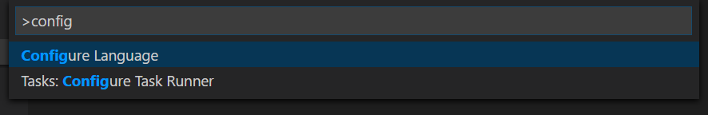

Visual Studio Codeでは次10ヵ国語の言語パックを提供しています。英語(米国)、簡体字中国語、繁体字中国語、フランス語、ドイツ語、イタリア語、日本語、韓国語、ロシア語、スペイン語です。なお言語パックはVS Codeにすでに含まれるため、追加インストールする必要はありません。
表示言語を既定でOSの言語に設定しますが、言語がサポートされていない場合は英語(米国)を選択します。
利用可能な言語
| Display Language | Locale |
|---|---|
| English (US) | en |
| Simplified Chinese | zh-CN |
| Traditional Chinese | zh-TW |
| French | fr |
| German | de |
| Italian | it |
| Japanese | ja |
| Korean | ko |
| Russian | ru |
| Spanish | es |
言語設定
表示言語を変更したい場合はコマンドラインで--localを使った起動で一時的に変更するか、Configure Languageコマンドで永続的に変更します。次の例を確認してください。
起動オプション --locale オプションによるフランス語に設定する例:
|
言語設定のコマンド
Configure Language コマンドはCode\Userに locale.jsonを作成します。このファイルのlocale属性を前のLocalに設定することで言語を変更します。
⇧⌘P (Windows, Linux Ctrl+Shift+P)を押してコマンドパレットを表示したらconfigと入力してconfigure Languageでフィルターをかけてください。

Enterで確定すればlocale.jsonと規定値をOSの言語で生成します。この値をIntelliSence(⌃Space (Windows, Linux Ctrl+Space))を使用してサポートしている言語を選択します。

locale.jsonを保存したらVS Codeを再起動して新しい表示言語を使用できます。
VS Code設定による簡体字中国語に設定する例:
|
またConfigure Languageを再度実行することで locale.jsonは再度呼びだすことが可能です。
Note: 変更した
localeの値を適用するにはVS Codeを再起動する必要があります。